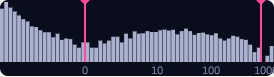
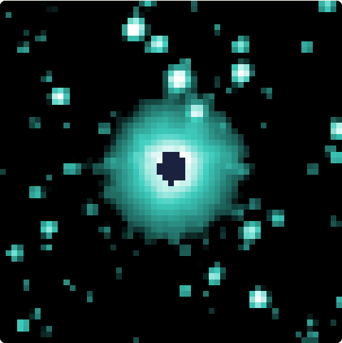
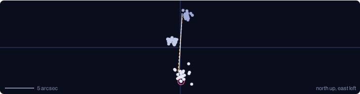

How pixel values become brightness on screen. The values themselves do not change.
Stretch
LinearSqrtLogAsinhEqualise
Asinh: faint things visible, bright stars not burnt out (default)
Black and white points
Noisezscale99.5%Custom

Reset allKept in this browser and in shared links
Barnard's Star
Real data
6′Measure

C17 Aug 2026, 00:53 UTCSurvey pass 3 D3, 1.77 µm Different colour: 1.77 vs 1.67 µm
Original
FlipSwipeTwo datesDifferenceStackTrail
Real SPHEREx data, QR3 · 17 Aug 2026, 1 exposure · D3 1.77 µm
Barnard's Star
Red dwarf (M4V), 1.83 pc
10.50″/yrmatches catalogue
Measured ±0.26″ from the pixels of 71 of 72 real exposures, catalogue 10.39″/yr
PathSpectrumBrightnessCutoutsExposure

Moving toward position angle 357° (each dot is one exposure; colours are survey passes). The catalogue value is from Gaia DR3 4472832130942575872. Parallax is not shown: three passes cannot measure it, so only the catalogue value is given.
Download these numbers (CSV)
The numbers
Motion10.50 ± 0.26″/yr
Direction357°
Catalogue (Gaia DR3)10.39″/yr
Parallax547 mas, catalogue
Exposures used71 of 72
DatesAug 2025 – Sep 2026
Fitstraight line
12 / 121×
Wavelength2.00 µmDeeper infraredSame wavelength only
Barnard's Star
Real data · QR3 · D3 1.77 µm
C17 Aug 2026Pass 3 · D3, 1.77 µm
Aug 2025Sep 2026
12/12
Measure
Red dwarf (M4V), 1.83 pc
10.50″/yrmatches catalogue
Measured ±0.26″ from 71 of 72 real exposures · catalogue 10.39″/yr
PathSpectrumBrightnessCutoutsExposure
Picture tools and workspaces open on a computer.
Average of all dates: moving things blur here · SPHEREx 2.00 µm